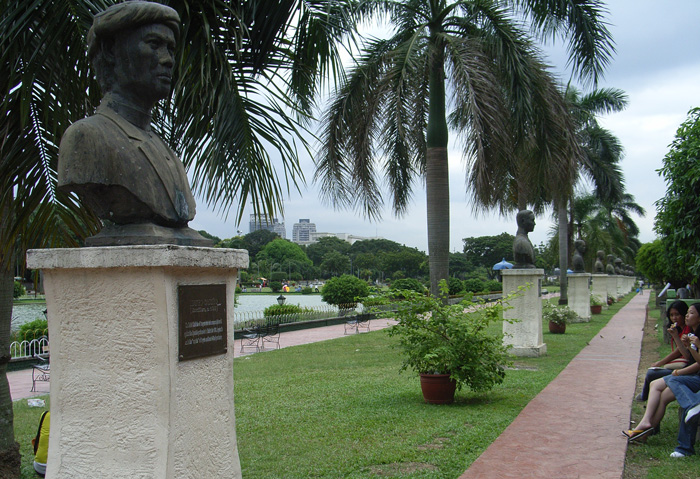
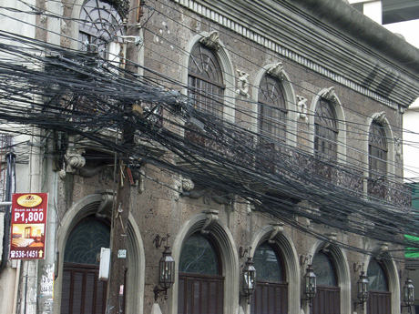
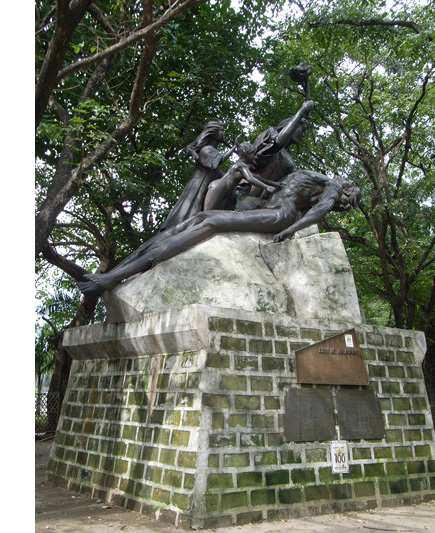
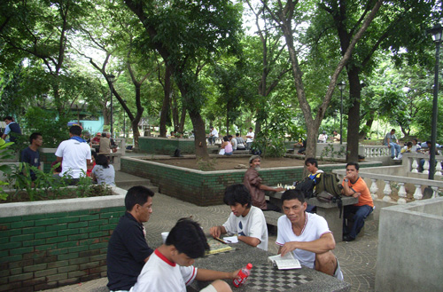
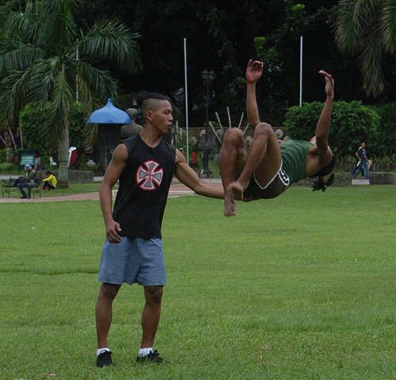
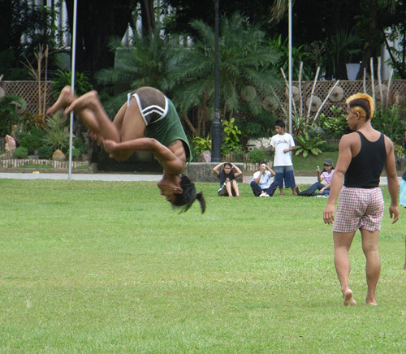
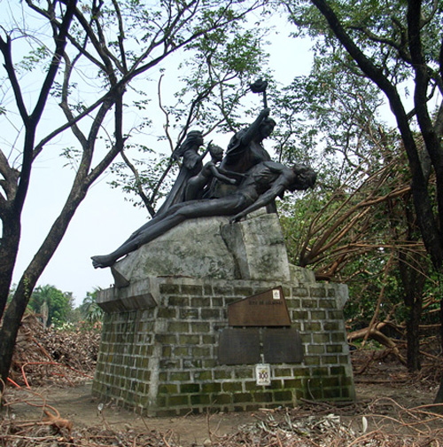

Philippines Trav-E-Logs ©
Manila
|  | |
| back: Marudi | Four hundred years of Philippine Patriots line pool at Rizal Park. |
================================= Flew into the Philippines, landing at Diosdado Macapagal International Airport (formerly Clark Airbase) now used by the discount airlines. This is the airstrip that was destroyed when Mt. Pinatubo erupted in 1991. After receiving a 3-week visa-on-arrival, hopped a waiting bus for the 2+ hour express trip south to Manila. International flights into Clark are not mentioned in the latest Lonely Planet guidebook, so arrival information is not easy to come by. =================================
September, 2006
|
The bus has a few other backpackers, and fortunately one passenger was able to give advice on transportation to the backpacker area in Manila. The bus drops us off near a Metrorail stop, where we continue a few more stops to Pedro Gil Station. Then it was only a 15-minute walk until we found Friendly's Guesthouse -- also not in the Lonely Planet. Actually they were full for the evening, but accepted my reservation for the following day. Friendly's (across the street from Malate Pensionne) has free Wi-Fi, loads of accurate tourist information, and is already expanding to handle their increase in business. Spent the next day doing maintenance, and taking a leisurely walk through Rizal Park. I had no idea the colonial powers were as deadly in the Philippines as in South America! More surprising was reading that when the colonial priests arrived they had to compete with the Islam faith -- not just "heathens" as my history book claimed. Also passed through Manila on the way back to Malaysia some 15 days later, and was shocked at how much damage the city had suffered from the two typhoons. 40 to 50% of the large trees had been destroyed, and some areas still had no power. How often have you tried to take a photo, and been unable to avoid ugly utility lines decorating the sky? The photo below is just for you! Photos, clockwise from the top right: Chess Corner of Rizal Park (Scrabble too!); Rizal park is also gathering spot for practicing the martial art of Arnis; more Arnis; Statue in Rizal Park; Same statue some 2 weeks earlier -- before two Typhoons; Progress in Manila.  |     |
Enjoy!
Bill
------------------------------
Email me at: "juno.com" preceded by an "@" and "dancer2SEAsia"
"The backpacker discovers people are beautiful everywhere. It's the Governments that are evil."
| next: Cebu |
| back: Marudi |